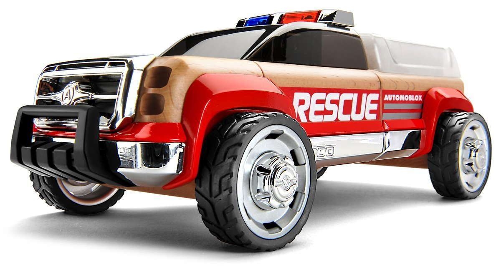
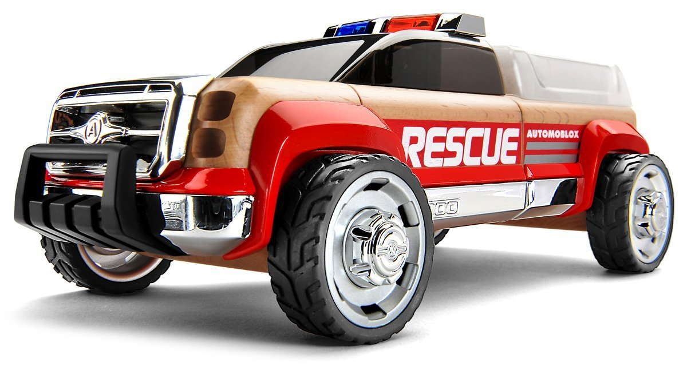

The Sauber C9 (later named the Sauber Mercedes C9 or Mercedes-Benz C9) was a Group C prototype race car introduced in 1987 as a continuation of the partnership between Sauber as a constructor and Mercedes-Benz as an engine builder for the World Sportscar Championship. The C9 replaced the previous Sauber C8. The C9 was a development of Sauber's previous C8 design, retaining a monocoque that largely consisted of aluminium, although considerably stiffer and with numerous other improvements. The rear suspension changed from vertically positioned spring/damper units arranged over the top of the gearbox to a horizontal layout aligned with the longitudinal axis of the car.